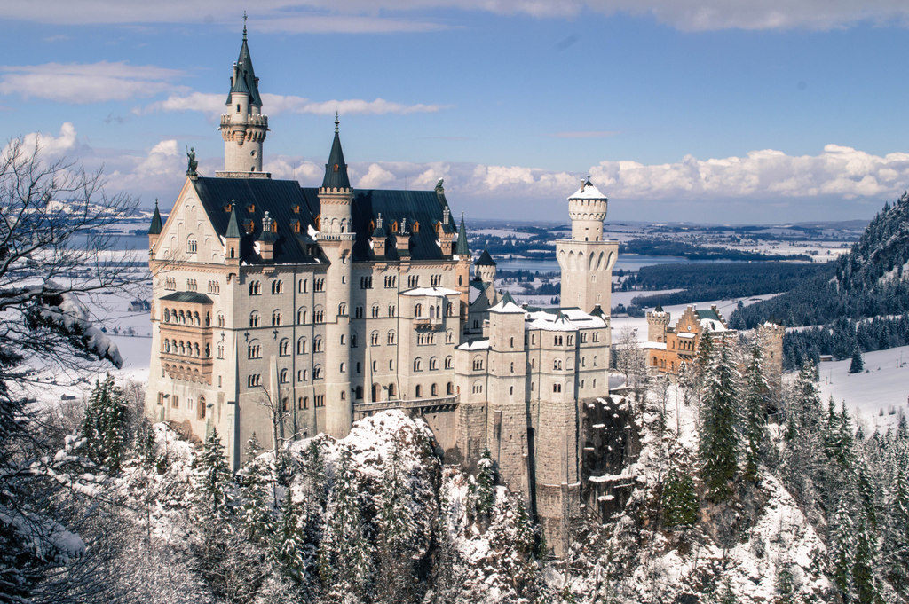

Luck of the Irish Travel Info
Luck of the Irish Travel Info

Add more information here about Munich....
The Munich Residenz is the former royal palace of the Bavarian monarchs. The Residenz is the largest city palace in Germany and is today open to visitors for its architecture, room decorations, and displays from the former royal collections.
This castle in the kingdom of Bavaria is a must see. Built with Ludwig II own money as a retreat, it opened to the public after his death and now is visited by 1.3 million people a year.